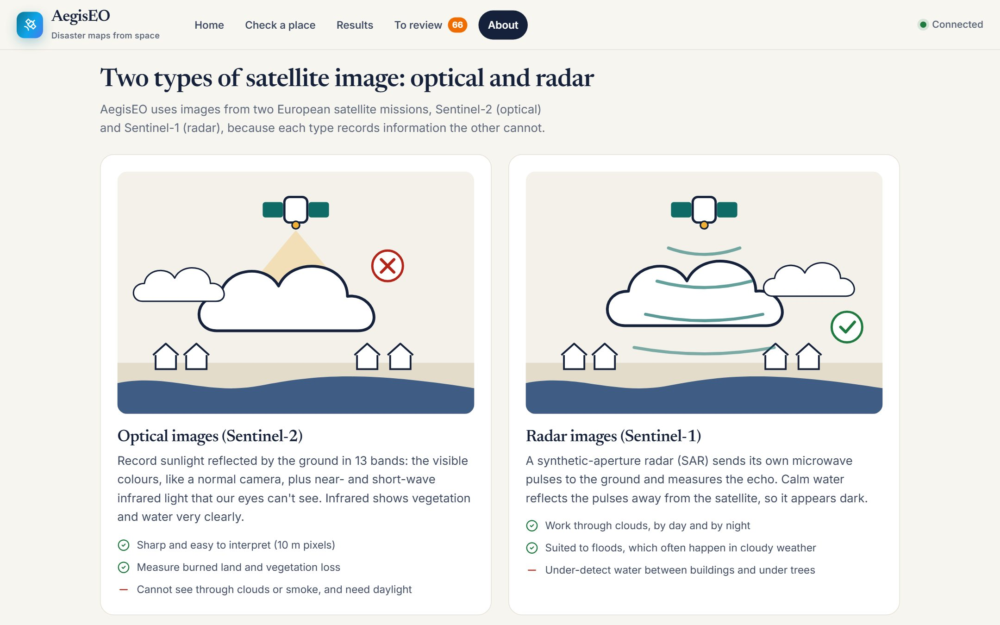
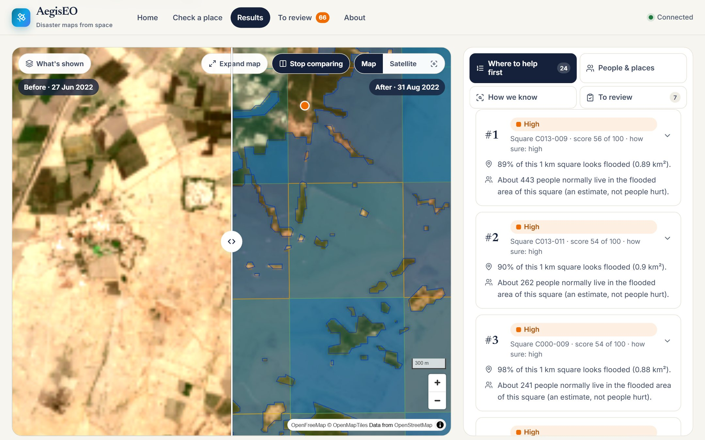

This chapter explains the science and the vocabulary that the rest of the document relies on, in the order in which the ideas build on each other: satellites and their schedules, what an image is, the two kinds of image AegisEO uses, how simple formulas reveal water and burned land, how "before" and "after" are compared, how images are placed on a map, where the images come from, and how a computer can learn to recognise water.
An Earth-observation satellite travels around the Earth on an orbit, a fixed path that it repeats again and again. The Sentinel satellites used by AegisEO fly about 690 km (Sentinel-1) and 790 km (Sentinel-2) above the ground on a sun-synchronous polar orbit: they pass close to the North and South Poles on every lap, and they cross any given latitude at the same local time of day, so lighting conditions are similar from one image to the next. One lap takes about 100 minutes. While the satellite moves north or south, the Earth turns underneath it, so each lap covers a different strip of the planet.
A satellite's instrument records a strip of ground called a swath (about 250 km wide for Sentinel-1's standard mode and 290 km for Sentinel-2). One passage of the satellite over a place is a pass (also called an acquisition). Because the strips of successive laps are side by side, a single satellite needs several days before it images the same place again. That waiting time is the revisit interval. The exact repetition of the same path, with identical viewing geometry, is called the repeat cycle.
| Mission | Satellites (period) | Repeat cycle per satellite | Typical revisit of a place |
|---|---|---|---|
| Sentinel-1 (radar) | 1A (2014-), 1B (2016 - failed Dec 2021), 1C (launched Dec 2024) | 12 days | 6 days with two satellites, 12 days with one; more often where tracks overlap |
| Sentinel-2 (optical) | 2A (2015-), 2B (2017-), 2C (2024-) | 10 days | 5 days with two satellites, 2-3 days at mid latitudes where orbits overlap |
These are typical figures, not promises: a satellite does not record every pass everywhere (operators plan which regions are imaged), and an optical image is only useful if clouds do not hide the ground. Section 7.1 shows the real dates of every pass found for the Sindh 2022 case study.
A satellite image is a grid of numbers. Each cell of the grid is a pixel (short for "picture element") and holds a measurement of one small square of ground. The ground size of a pixel is the image's spatial resolution: a 10 m resolution means each pixel covers 10 m × 10 m. Anything much smaller than a pixel, such as a single house or a narrow street, cannot be seen.
An instrument usually measures several kinds of signal at once. Each kind is stored as a separate grid called a band. An optical image has bands for different colours of light; a radar image has bands for different combinations of transmitted and received signal. An image with many colour bands is multispectral.
Image files that also record where on Earth each pixel lies are georeferenced. The standard file format for georeferenced images is GeoTIFF, an ordinary TIFF image file with location information added. AegisEO reads GeoTIFFs and also exports its results as a GeoTIFF.
An optical image records sunlight reflected by the ground, like a camera. Sentinel-2's instrument measures 13 bands: the visible colours blue, green and red, plus near-infrared (NIR) and short-wave infrared (SWIR) light, which our eyes cannot see. These invisible bands are what make optical images so useful:
AegisEO uses six Sentinel-2 bands: B02 (blue), B03 (green), B04 (red), B08 (near-infrared), B11 and B12 (short-wave infrared). The visible and near-infrared bands have 10 m pixels; B11 and B12 have 20 m pixels.
Optical images have one big weakness: light cannot pass through cloud, and cloud shadows can look like water. Sentinel-2 images are delivered at Level-2A (L2A), meaning the effect of the atmosphere has already been removed so the values are surface reflectance (the fraction of light reflected by the ground itself). Each L2A image also contains a scene classification layer (SCL) that labels every pixel as clear ground, water, cloud, cloud shadow and so on. AegisEO uses the SCL as a cloud mask: pixels labelled cloud, cloud shadow, thin cirrus cloud or "no data" are treated as invalid, and the share of such pixels inside the user's area is measured before choosing an image.
Radar (radio detection and ranging) is an active sensor: instead of waiting for sunlight, the satellite sends its own pulses of microwave radiation towards the ground at an angle and measures how much of each pulse is reflected back to it. Microwaves pass through clouds, smoke and darkness, so radar images can be taken in any weather, by day and by night. That is why radar is the main tool for mapping floods, which usually happen under thick cloud.
Sentinel-1 carries a synthetic-aperture radar (SAR). A real radar antenna small enough to fly would give very blurry images; a SAR combines the echoes received at many points along the satellite's path, which acts like a much longer antenna ("synthetic aperture") and gives sharp images, here with 10 m pixels. Sentinel-1 works in the C-band, microwaves about 5.6 cm long.
The quantity measured is backscatter: the share of the transmitted energy that returns to the satellite. Because the values cover a huge range, they are expressed in decibels (dB), a logarithmic scale on which every 10 dB is a factor of ten. How the ground looks in a radar image depends on its roughness and structure:
Sentinel-1 transmits vertically polarised waves and receives both vertically and horizontally polarised echoes, giving two bands: VV (vertical transmit, vertical receive) and VH (vertical transmit, horizontal receive). VV is the most useful for open water; VH is more sensitive to vegetation. Radar images are naturally grainy; this salt-and-pepper noise is called speckle, and AegisEO reduces it with a standard smoothing method, the Lee filter, before comparing radar images.
AegisEO uses the radiometrically terrain-corrected (RTC) version of Sentinel-1, in which the brightness changes caused by hills facing towards or away from the satellite have already been corrected. RTC data are expressed in a convention called gamma-nought; the flood model was trained on a slightly different convention (sigma-nought), so AegisEO converts between them with a fixed correction of about -1.1 dB before running the model (function gamma0_to_sigma0_db in backend/aegis/ml/features.py).


A spectral index combines two bands into a single number per pixel that highlights one kind of surface. Most indices have the form (A − B) / (A + B), called a normalised difference, which always lies between −1 and +1. AegisEO uses four (file backend/aegis/analysis/indices.py):
| Index | Formula (Sentinel-2 bands) | What it shows | Used for |
|---|---|---|---|
| NDVI normalised difference vegetation index | (NIR − Red) / (NIR + Red) = (B08 − B04)/(B08 + B04) | High for healthy vegetation | Landslide scars (sudden vegetation loss); "was this pixel vegetated before?" for wildfires |
| NDWI normalised difference water index | (Green − NIR)/(Green + NIR) = (B03 − B08)/(B03 + B08) | Positive over open water | Input to the flood model |
| MNDWI modified NDWI | (Green − SWIR1)/(Green + SWIR1) = (B03 − B11)/(B03 + B11) | Positive over water; fewer false alarms in towns | Model input and the independent optical cross-check |
| NBR normalised burn ratio | (NIR − SWIR2)/(NIR + SWIR2) = (B08 − B12)/(B08 + B12) | High for vegetation, low for burned ground | Wildfire mapping through dNBR |
For wildfires the useful quantity is the drop in NBR: dNBR = NBR(before) − NBR(after). The United States Geological Survey's FIREMON method groups dNBR into severity classes: below 0.10 unburned, 0.10-0.27 low, 0.27-0.44 moderate-low, 0.44-0.66 moderate-high, above 0.66 high. AegisEO uses exactly these classes.
Change detection means finding what is different between two images of the same place taken at different times. Two classic approaches are used in AegisEO:
Change detection has a built-in trap: not every change is a disaster. Crops grow, rivers rise with the seasons, and clouds come and go. This is why AegisEO removes water that is always there, warns when "before" and "after" images are more than 60 days apart, and checks whether two independent methods agree.
Positions on Earth are usually given as latitude (degrees north or south of the equator) and longitude (degrees east or west of Greenwich), measured on a standard model of the Earth's shape called WGS84 (World Geodetic System 1984), the same system GPS uses. Degrees are inconvenient for measuring areas and distances, because a degree of longitude shrinks towards the poles.
A map projection converts the curved Earth to a flat grid measured in metres. AegisEO uses UTM (Universal Transverse Mercator), which divides the world into 60 north-south zones, each 6° of longitude wide, and gives accurate metre coordinates within a zone. Every check uses the UTM zone of the centre of its area.
The place a user wants to check is the area of interest (AOI). In AegisEO it is usually a bounding box: a rectangle described by its minimum and maximum longitude and latitude. Images from different satellites have different pixel grids, so before they can be compared they must be co-registered: warped onto one common grid so that the same pixel in every layer covers the same piece of ground. AegisEO builds one grid per check (20 m pixels by default, in the UTM zone of the area) and reprojects every image and map onto it. Changing an image's pixel grid is called resampling.
The Sentinel satellites belong to Copernicus, the European Union's Earth-observation programme; the European Space Agency (ESA) operates them, and their data are free for any use. AegisEO does not download whole satellite scenes from ESA. Instead it uses Microsoft Planetary Computer, a free service that hosts copies of the Sentinel archives and other environmental datasets in cloud storage. Two standards make this efficient:
Planetary Computer requires no account. Before reading a file, AegisEO asks Planetary Computer's token service for a free, temporary SAS token (a "shared access signature": a string added to the file's web address that grants read access for a limited time).
AegisEO's flood detector is a machine-learning model: instead of following hand-written rules, it learned how to recognise water from examples. The examples come from Sen1Floods11, a public dataset of 446 image chips (512 × 512 pixel tiles at 10 m) from 11 flood events in Africa, Asia, Europe and the Americas (Bolivia, Ghana, India, the Mekong basin, Nigeria, Pakistan, Paraguay, Somalia, Spain, Sri Lanka and the USA), each with matching Sentinel-1 and Sentinel-2 images and a label: a map, drawn by hand by experts, marking which pixels are water.
The data are split three ways, and the split matters for honesty. The training set (252 chips) is what the model learns from. The validation set (89 chips) is used to make choices during development, such as which version of the model to keep. The test set (90 chips) is used only once at the end to measure accuracy on images the model never saw. A fourth set, 15 chips from a flood in Bolivia, comes from an event that was excluded from training altogether, which shows how the model behaves in a completely new place.
The model is a neural network: a large mathematical function with about 1.2 million adjustable numbers (parameters), arranged in layers. Training repeatedly shows it chips, compares its output with the expert labels, and nudges the parameters to reduce the error. It is a convolutional neural network (CNN), meaning its layers look at small neighbourhoods of pixels at a time, which suits images. The task it performs is semantic segmentation: deciding a class (water or not water) for every pixel. Its architecture is a U-Net, a widely used segmentation design in which an encoder shrinks the image step by step to capture context and a decoder enlarges it back to full resolution, with "skip connections" that carry fine detail across. Chapter 13 describes AegisEO's two-branch version.
For each pixel the model outputs a probability of water between 0 and 1. A threshold (0.5 by default) turns probabilities into a yes/no map. The quality of such a map is measured against expert labels with four standard numbers:
A model's probabilities should also be honest. A model is calibrated when, among all pixels it gives a probability of 0.7, about 70% really are water. The usual measure of the gap is the expected calibration error (ECE). Neural networks are often overconfident; a simple fix called temperature scaling divides the model's raw outputs by one number, T, fitted on the validation set (AegisEO's model uses T = 1.66), which makes the probabilities more honest without changing which pixels rank highest.
Finally, the model can estimate its own uncertainty. During training, a technique called dropout randomly switches off parts of the network so that it does not rely on any single part. Monte-Carlo (MC) dropout keeps this random switching on when the model is used: the same image is analysed several times (6 by default), each time with a different random part switched off, and the spread between the answers measures how unsure the model is about each pixel. When images differ a lot from the training data (for example deserts or snow), predictions are less reliable; this situation is called distribution shift, and AegisEO checks for it on every run (safety check G11).
models/evaluation.json, produced by python -m aegis.ml.evaluate. On the 90 test chips the deployed model reaches IoU 0.844, F1 0.915, precision 0.932 and recall 0.899. Chapter 14 gives the full table.